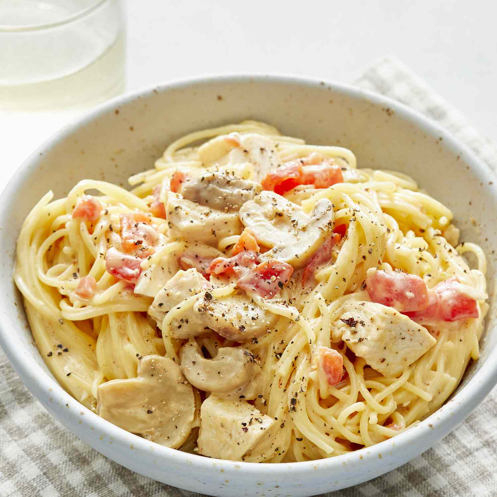

Chicken Spaghetti

Description
Chicken spaghetti is an Italian-American dish made with diced poultry
and in a butter, cream or milk and cheese sauce flavored with sherry or
white wine, and combined with linguine, spaghetti, egg noodles, or other
types of pasta, sometimes topped with breadcrumbs or cheese, and garnished
with parsley or basil.
Ingredients
- Pasta or spaghetti noodles
- Cooked chicken breast
- Canned soup
- Diced tomatoes
- Green chile peppers
- Cheese
- Mushrooms
- Seasonings
Steps
- Cook the pasta or the noodles, drain it and return it to the pot.
- Add the remaining ingredients to the pot.
- Cook, stirring frequently, until the cheese is melted.